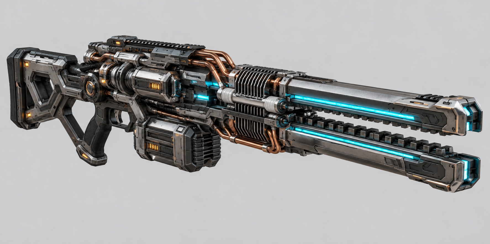
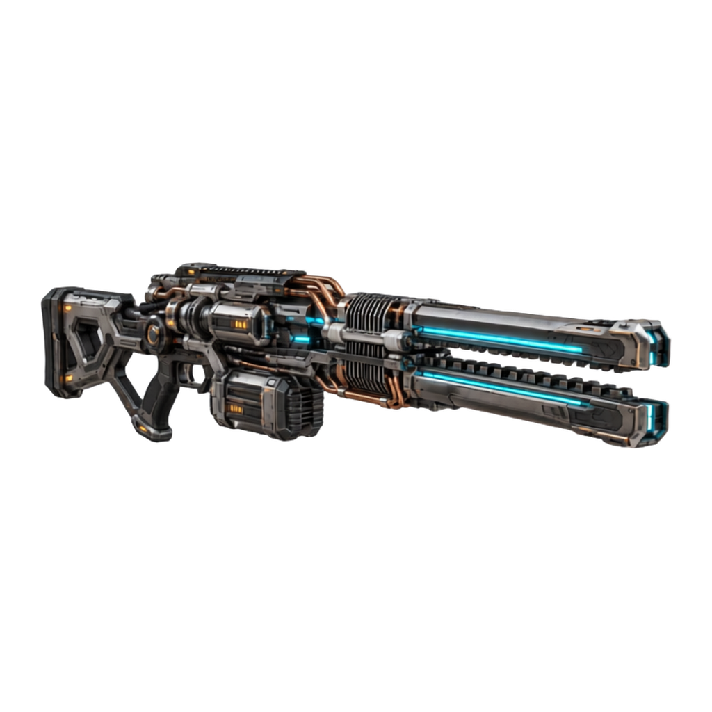
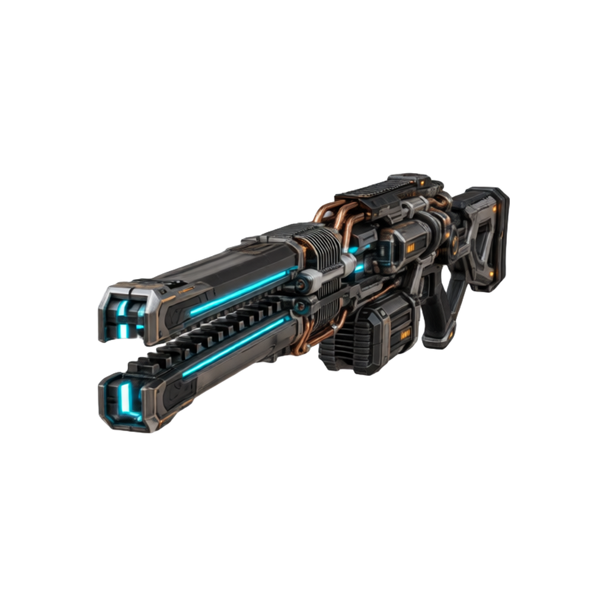
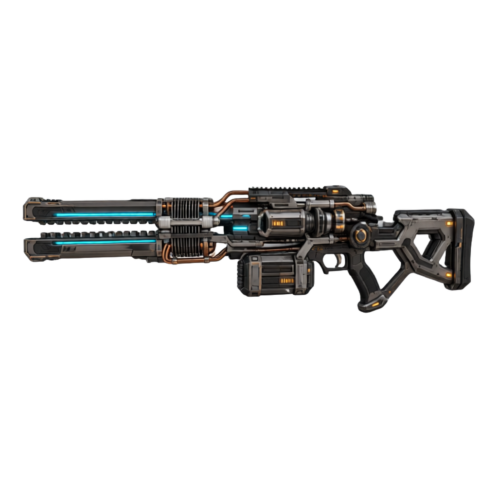
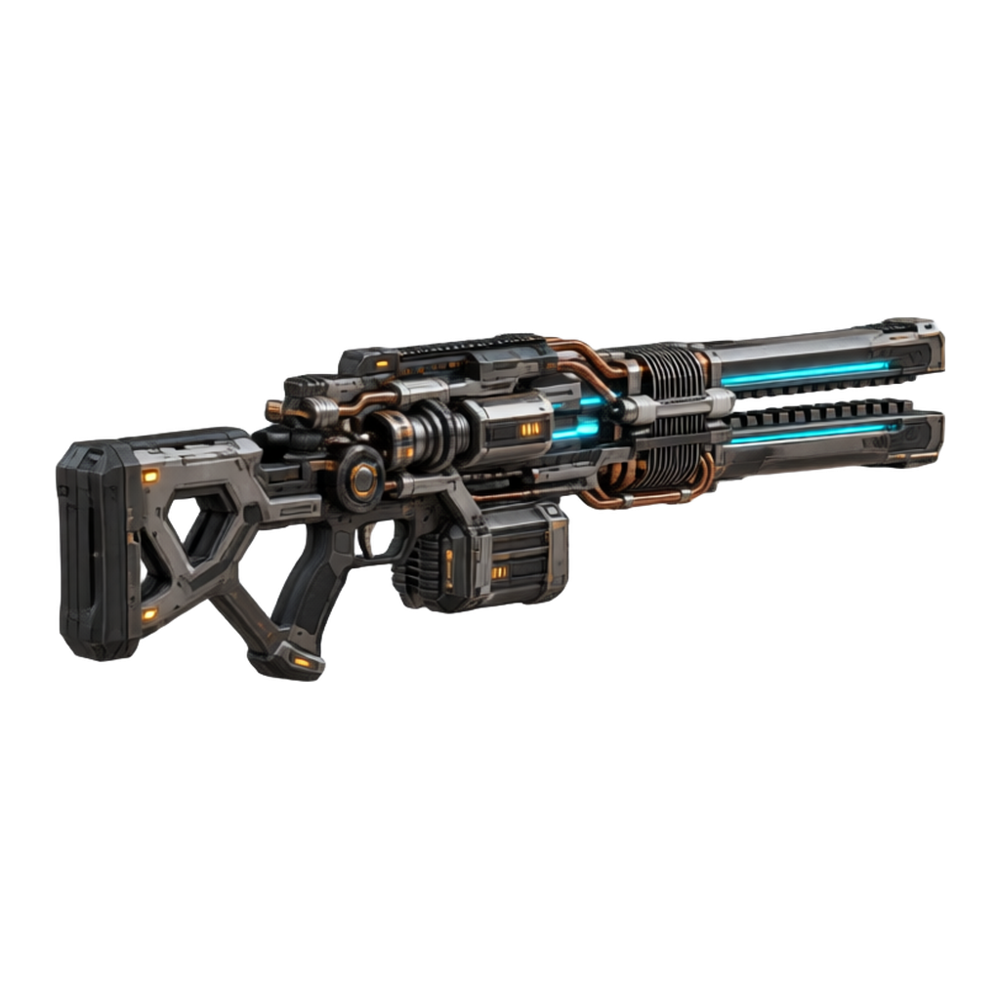
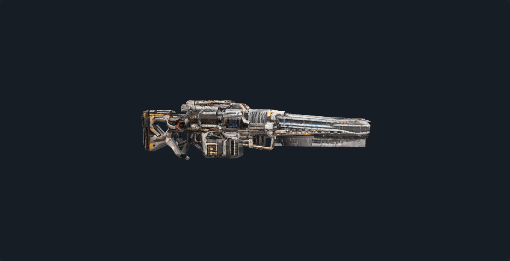
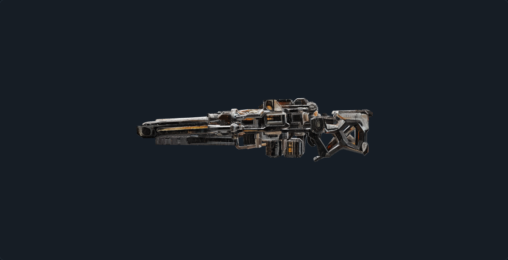

One reference → four generated views → Pixal3D
The image below is the unchanged original. ComfyUI generated the four camera-conditioned inputs, then native Pixal3D multiview inference consumed all four to create the textured GLB. No Blender model, existing GLB, hand-built mesh, or game-optimization stage was used.

Generated reconstruction inputs
Front / left / back / right are the Pixal3D input ports. Angles are the requested camera settings; generated poses and hidden details are approximate, not measured photographs. All four inputs use one common framing scale and the 20° FOV setting.








Actual inference output
These next images are screenshots of the actual GLB in Intel 3D Studio, not the reference or generated conditioning images. The first raw reconstruction has rough surfaces and imperfect color/detail matching.




Textured GLB · 180.7 MB · Run manifest · Camera configuration
6,463,700 triangles and two embedded 2048 × 2048 PBR images. This is the raw inference result, not a game-ready optimized asset. Loading and rotation may be slow on lower-powered devices.